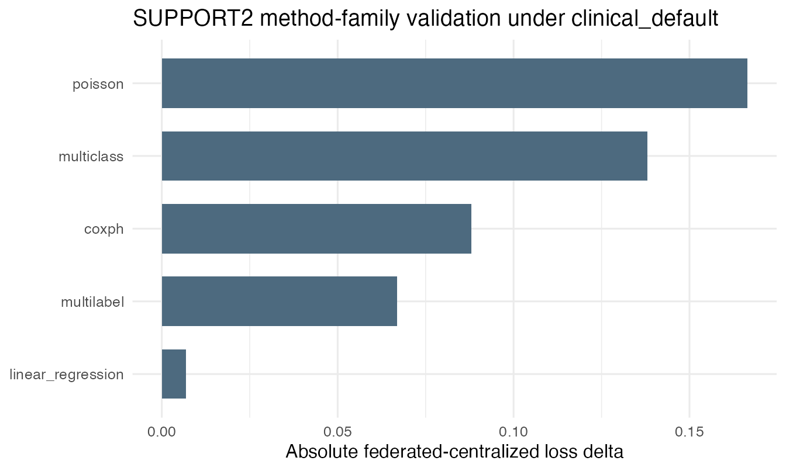
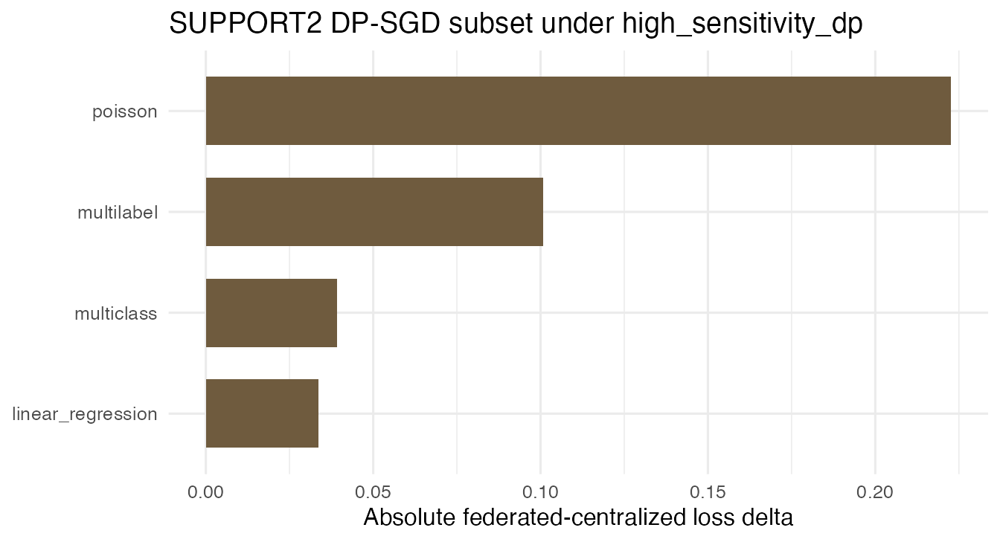

Clinical method-family benchmarks
clinical-method-family-benchmarks.RmdHistorical validation artifact (pre-0.3). The recorded results and API snippets below describe the retired client privacy-profile/Secure Aggregation architecture. They do not validate the current v0.3 lifetime-DP contract and must not be used as deployment or security instructions. See
README.mdand the serverARCHITECTURE.mdfor the enforced contract.
This vignette records the non-binary clinical method-family
validation used for the dsFlower thesis evidence. The benchmark uses
SUPPORT2, the Study to Understand Prognoses and Preferences for Outcomes
and Risks of Treatments, from the UCI Machine Learning Repository and
executes PyTorch templates under the clinical_default
profile, so server-side row policies and Secure Aggregation are active.
A second evidence file repeats the DP-compatible non-survival families
under high_sensitivity_dp, where SecAgg+ is combined with
Opacus DP-SGD.
The benchmark complements the binary clinical benchmarks: classification and XGBoost are covered there, while this vignette covers continuous regression, count regression, multiclass classification, multilabel classification and time-to-event survival.
task_map <- data.frame(
family = c(
"Continuous regression",
"Count regression",
"Multiclass classification",
"Multilabel classification",
"Survival"
),
target = c(
"Severity score derived from SUPPORT2 variables",
"Comorbidity count",
"Diagnosis class",
"Death, hospital death and diabetes labels",
"Hospital time-to-event with event indicator"
),
template = c(
"pytorch_linear_regression",
"pytorch_poisson",
"pytorch_multiclass",
"pytorch_multilabel",
"pytorch_coxph"
),
privacy_route = c(
"SecAgg and DP-SGD",
"SecAgg and DP-SGD",
"SecAgg and DP-SGD",
"SecAgg and DP-SGD",
"SecAgg only: Cox partial likelihood is risk-set based"
),
stringsAsFactors = FALSE
)
knitr::kable(task_map)| family | target | template | privacy_route |
|---|---|---|---|
| Continuous regression | Severity score derived from SUPPORT2 variables | pytorch_linear_regression | SecAgg and DP-SGD |
| Count regression | Comorbidity count | pytorch_poisson | SecAgg and DP-SGD |
| Multiclass classification | Diagnosis class | pytorch_multiclass | SecAgg and DP-SGD |
| Multilabel classification | Death, hospital death and diabetes labels | pytorch_multilabel | SecAgg and DP-SGD |
| Survival | Hospital time-to-event with event indicator | pytorch_coxph | SecAgg only: Cox partial likelihood is risk-set based |
It is laid out in two parts: first the commands you would run to reproduce the benchmark, then the recorded results of that run loaded from the committed evidence artifacts. No live Opal servers are required to render this page; the command chunks are shown for reference and are not executed.
Running This Benchmark
The SUPPORT2 cohort is partitioned across three Opal nodes that are
already set up and serving the table
dsflower_demo.support2_cohort. Each family is one
ds.flower.fit() call over the server-side partitions; only
aggregate training history and model parameters are returned to the
researcher.
1. Connect to the DataSHIELD nodes. Open a single session across the three Opal nodes that hold the partitioned SUPPORT2 cohort.
library(DSI)
library(DSOpal)
library(dsFlowerClient)
builder <- DSI::newDSLoginBuilder()
builder$append(server = "node1", url = "https://opal-node-1.example.org",
user = "researcher", password = "********",
table = "dsflower_demo.support2_cohort")
builder$append(server = "node2", url = "https://opal-node-2.example.org",
user = "researcher", password = "********",
table = "dsflower_demo.support2_cohort")
builder$append(server = "node3", url = "https://opal-node-3.example.org",
user = "researcher", password = "********",
table = "dsflower_demo.support2_cohort")
conns <- DSI::datashield.login(builder$build(), assign = TRUE, symbol = "D")2. Run a method family. Train one template through dsFlower with FedAvg over the server-side table. The continuous-regression family is shown here; the standardized numeric SUPPORT2 columns are the features and the derived severity score is the target.
support2_features <- c(
"age", "num_co", "scoma", "meanbp", "hrt",
"resp", "temp", "crea", "sod", "wblc"
)
fit <- ds.flower.fit(
conns,
symbol = "D",
target = "severity_score",
features = support2_features,
model = "pytorch_linear_regression",
strategy = "fedavg",
privacy = "clinical_default",
rounds = 3
)
DSI::datashield.logout(conns)The other four families reuse the same ds.flower.fit()
call, swapping the model template and target:
pytorch_poisson on comorbidity_count,
pytorch_multiclass on diagnosis_class,
pytorch_multilabel on the
c("label_death", "label_hospital_death", "label_diabetes")
labels, and pytorch_coxph on the
c("time", "event") survival pair, each over three federated
rounds. To run the DP-SGD subset, swap the profile to
privacy = "high_sensitivity_dp"; the four non-survival
families remain compatible, with multiclass using six rounds for the
longer DP optimiser budget, while CoxPH stays on its SecAgg route.
Recorded Results
The values below come from the committed evidence artifacts for the runs described above; no live servers are contacted when the article renders.
evidence_path <- system.file(
"extdata", "dsflower_method_family_results.json",
package = "dsFlowerClient"
)
evidence <- jsonlite::fromJSON(evidence_path)
dp_evidence_path <- system.file(
"extdata", "dsflower_method_family_dp_results.json",
package = "dsFlowerClient"
)
dp_evidence <- jsonlite::fromJSON(dp_evidence_path)The benchmark uses the SUPPORT2 Study (3000 rows) under the clinical_default profile, with Secure Aggregation support TRUE. The rows are split evenly across three DataSHIELD servers; the per-site training and event counts below are used by the survival route disclosure guard.
site_summary <- data.frame(
server = names(evidence$site_train_n),
train_n = as.integer(unlist(evidence$site_train_n, use.names = FALSE)),
event_n = as.integer(unlist(evidence$site_event_n, use.names = FALSE))
)
knitr::kable(site_summary)| server | train_n | event_n |
|---|---|---|
| opal1 | 1000 | 259 |
| opal2 | 1000 | 259 |
| opal3 | 1000 | 259 |
Each row in the result table compares the centralized PyTorch loss against the loss obtained by evaluating the federated model artefact saved by dsFlower after the SecAgg run completed. The route is accepted only when all clients complete without failures and the federated loss remains within the declared validation envelope for that method family.
results <- evidence$results
knitr::kable(results[, c(
"family", "method", "centralized_metric", "centralized_loss",
"federated_loss", "delta_loss", "federated_n_failures",
"validation_status"
)], digits = 4)| family | method | centralized_metric | centralized_loss | federated_loss | delta_loss | federated_n_failures | validation_status |
|---|---|---|---|---|---|---|---|
| continuous outcome regression | pytorch_linear_regression | mse | 0.5741 | 0.5672 | -0.0069 | 0 | pass |
| count regression | pytorch_poisson | poisson_nll | 0.3047 | 0.4712 | 0.1665 | 0 | pass |
| multiclass classification | pytorch_multiclass | cross_entropy | 0.0517 | 0.1897 | 0.1380 | 0 | pass |
| multilabel classification | pytorch_multilabel | multilabel_bce | 0.3928 | 0.4596 | 0.0668 | 0 | pass |
| time-to-event survival | pytorch_coxph | cox_partial_likelihood | 6.2618 | 6.3498 | 0.0880 | 0 | pass |
dp_results <- dp_evidence$results
knitr::kable(dp_results[, c(
"family", "method", "centralized_metric", "centralized_loss",
"federated_loss", "delta_loss", "federated_n_failures",
"validation_status"
)], digits = 4)| family | method | centralized_metric | centralized_loss | federated_loss | delta_loss | federated_n_failures | validation_status |
|---|---|---|---|---|---|---|---|
| continuous outcome regression | pytorch_linear_regression | mse | 0.5741 | 0.6078 | 0.0336 | 0 | pass |
| count regression | pytorch_poisson | poisson_nll | 0.3047 | 0.5273 | 0.2226 | 0 | pass |
| multiclass classification | pytorch_multiclass | cross_entropy | 0.0206 | 0.0597 | 0.0391 | 0 | pass |
| multilabel classification | pytorch_multilabel | multilabel_bce | 0.3928 | 0.4937 | 0.1008 | 0 | pass |
The DP-SGD table is defined over the SUPPORT2 routes whose losses decompose by sample. CoxPH is validated under Secure Aggregation in the table above; its partial-likelihood objective couples samples through risk sets, so its validated privacy route is SecAgg rather than Opacus DP-SGD. The four non-survival families shown here are the DP-SGD-compatible SUPPORT2 routes; all four complete under the stricter profile and remain within their declared utility envelopes. Multiclass classification uses six federated rounds in this profile because the stricter DP-SGD optimiser required a slightly longer training budget than the non-DP family run.
compatibility <- data.frame(
family = c(
"Continuous regression",
"Count regression",
"Multiclass classification",
"Multilabel classification",
"Survival"
),
clinical_default = c("pass", "pass", "pass", "pass", "pass"),
high_sensitivity_dp = c("pass", "pass", "pass", "pass", "SecAgg route"),
reason = c(
"MSE is decomposable by row.",
"Poisson NLL is decomposable by row.",
"Cross entropy is decomposable by row.",
"Binary cross entropy is decomposable by row.",
"Cox partial likelihood is validated under SecAgg."
),
stringsAsFactors = FALSE
)
knitr::kable(compatibility)| family | clinical_default | high_sensitivity_dp | reason |
|---|---|---|---|
| Continuous regression | pass | pass | MSE is decomposable by row. |
| Count regression | pass | pass | Poisson NLL is decomposable by row. |
| Multiclass classification | pass | pass | Cross entropy is decomposable by row. |
| Multilabel classification | pass | pass | Binary cross entropy is decomposable by row. |
| Survival | pass | SecAgg route | Cox partial likelihood is validated under SecAgg. |
if (requireNamespace("ggplot2", quietly = TRUE)) {
plot_data <- results
plot_data$label <- sub("^pytorch_", "", plot_data$method)
plot_data$abs_delta <- abs(plot_data$delta_loss)
ggplot2::ggplot(plot_data, ggplot2::aes(
x = stats::reorder(label, abs_delta),
y = abs_delta
)) +
ggplot2::geom_col(width = 0.68, fill = "#4D6A7F") +
ggplot2::coord_flip() +
ggplot2::labs(
x = NULL,
y = "Absolute federated-centralized loss delta",
title = "SUPPORT2 method-family validation under clinical_default"
) +
ggplot2::theme_minimal(base_size = 12)
}
if (requireNamespace("ggplot2", quietly = TRUE)) {
plot_data <- dp_results
plot_data$label <- sub("^pytorch_", "", plot_data$method)
plot_data$abs_delta <- abs(plot_data$delta_loss)
ggplot2::ggplot(plot_data, ggplot2::aes(
x = stats::reorder(label, abs_delta),
y = abs_delta
)) +
ggplot2::geom_col(width = 0.68, fill = "#6F5B3E") +
ggplot2::coord_flip() +
ggplot2::labs(
x = NULL,
y = "Absolute federated-centralized loss delta",
title = "SUPPORT2 DP-SGD subset under high_sensitivity_dp"
) +
ggplot2::theme_minimal(base_size = 12)
}